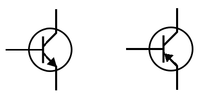
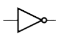
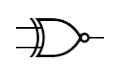

Componentes electrónicos
.png)
Las resistencias son dispositivos que limitan el paso de corriente en un circuito. Su función principal es proteger componentes, dividir tensiones y controlar la corriente. Su valor se mide en ohmios (Ω).
Los inductores almacenan energía en forma de campo magnético cuando pasa corriente a través de ellos. Se usan en filtros, fuentes de poder y circuitos de alta frecuencia. Su unidad es el henrio (H).
Un transformador cambia el voltaje de una corriente alterna (AC) usando inducción electromagnética entre dos bobinas. Es común en cargadores y redes eléctricas.
Los capacitores almacenan energía en forma de campo eléctrico, se cargan y descargan rápidamente. Se utilizan para estabilizar voltajes, filtrar señales o mantener energía temporalmente. Su unidad es el faradio (F).
Las pilas convierten energía química en eléctrica. Hay pilas AA, AAA o de litio (como las de celulares). Una batería es un conjunto de pilas que permite mayor voltaje o capacidad, como las de autos o notebooks.
Diodos, LED y Transistores
El diodo permite el paso de corriente en una sola dirección. Es usado para proteger circuitos y convertir corriente alterna en continua.
El LED es un diodo que emite luz cuando pasa corriente por él. Es eficiente, de larga duración y se usa en luces e indicadores.
El transistor puede actuar como interruptor o amplificador. Tiene tres terminales: base, colector y emisor. Controlando la corriente de la base, se regula el paso entre colector y emisor.
Tipos de transistores:
- BJT (Transistor Bipolar de Unión): Hay NPN y PNP. Se usan en amplificadores y controles analógicos. 
- FET (Transistor de Efecto de Campo): Controlado por voltaje. Incluye MOSFET y JFET, usados en computadoras y circuitos rápidos.
- IGBT: Mezcla BJT y MOSFET. Se usa en control de motores, energía solar, etc.
Transistores Cuánticos
Los transistores cuánticos utilizan principios de la mecánica cuántica como el túnel cuántico y la superposición para controlar la corriente eléctrica. A diferencia de los transistores clásicos, pueden manejar electrones de forma individual y alcanzar tamaños nanométricos.
Un ejemplo es el transistor de un solo electrón (SET), que permite un control extremadamente preciso y eficiente. También se investigan tecnologías con puntos cuánticos, nanotubos de carbono y materiales topológicos.
Aunque aún están en desarrollo, los transistores cuánticos prometen ser más rápidos, pequeños y eficientes, y son fundamentales para la futura computación cuántica y el avance en inteligencia artificial y criptografía.
Disparador Schmitt
1) Tres ejemplos diferentes de histéresis que no tengan que ver con la lógica digital:
- Termostato de una heladera: No enciende y apaga continuamente con pequeños cambios de temperatura. Tiene dos puntos de referencia: se apaga al alcanzar cierta temperatura baja y vuelve a encender solo si sube por encima de otro valor más alto. Esto evita ciclos rápidos de encendido/apagado.
- Frenos de un auto con ABS: El sistema no actúa apenas detecta una pequeña pérdida de tracción. Solo interviene cuando la diferencia entre velocidad de las ruedas es suficiente, evitando así respuestas innecesarias ante mínimas variaciones.
- Imanes en materiales ferromagnéticos: Al magnetizar un material, no vuelve exactamente a su estado original cuando se elimina el campo. La curva de histéresis magnética muestra cómo la magnetización depende de su historia previa.
2) Tipos de compuertas lógicas: tecnología, características y aplicaciones:
| AND | OR | NOT | NAND | NOR | XOR | XNOR |
|---|---|---|---|---|---|---|
|  |  |
 |
Tecnologías más comunes:
- TTL (Transistor-Transistor Logic): Voltaje de alimentación: 5V. Rápida (tiempos de respuesta en ns). Más consumo que CMOS.
- CMOS (Complementary Metal-Oxide-Semiconductor): Voltaje de alimentación: 3V a 15V. Muy bajo consumo. Más lento que TTL.
Velocidades:
- TTL estándar: ~10 ns
- TTL rápido (74FXX): ~1-2 ns
- CMOS: ~10-100 ns (depende del tipo y voltaje)
Aplicaciones: Sistemas de control industrial, computadoras y microcontroladores, domótica, alarmas, relojes digitales, temporizadores.
3) Compuertas del tipo Schmitt-trigger y sus códigos:
Las compuertas Schmitt-trigger están diseñadas para trabajar con señales de entrada ruidosas o lentas, generando una salida limpia y digital.
Ejemplos y códigos:
- CD4093: Cuádruple NAND con disparador Schmitt.
- CD40106: Compuerta NOT con disparador Schmitt, usada en osciladores.
- 74HC14: Inversor con Schmitt Trigger, versión TTL de alta velocidad.
- 74LS132: NAND Schmitt Trigger TTL.
Estas compuertas se identifican por llevar una forma ondulada en su símbolo (representando la histéresis).
4) Informe sobre domótica:
La domótica es el conjunto de tecnologías aplicadas al control y automatización inteligente de viviendas, edificios y espacios. Permite gestionar distintos sistemas como la iluminación, climatización, seguridad, consumo eléctrico y electrodomésticos, de manera automática o a distancia.
Su objetivo es brindar mayor confort, eficiencia energética, seguridad y accesibilidad. Se puede controlar desde interfaces como paneles táctiles, computadoras, celulares o comandos de voz.
Un sistema domótico se basa en tres componentes fundamentales:
- Sensores: captan información del entorno, como temperatura, presencia de personas, humedad, etc.
- Unidad de control: procesa la información recibida y toma decisiones programadas.
- Actuadores: ejecutan las órdenes del sistema, como activar una lámpara o encender el aire.
Ejemplos de usos:
- Encender luces automáticamente.
- Controlar la temperatura.
- Activar alarmas de seguridad.
- Monitorear el hogar desde el celular.
Ventajas:
- Ahorro de energía
- Seguridad
- Comodidad
- Accesibilidad
Tecnologías usadas:
- WiFi, ZigBee, Bluetooth
- Protocolos como KNX o Z-Wave
- Asistentes de voz como Google Assistant y Alexa
La domótica ya está presente en hogares, oficinas, hoteles y edificios inteligentes. Su integración con inteligencia artificial y el Internet de las Cosas (IoT) está creando espacios cada vez más autónomos.
5) Sensores y accesorios para domótica – descripción y presupuesto:
| Sensor / Accesorio | Descripción breve | Precio aprox. (USD) |
|---|---|---|
| Sensor PIR | Detecta movimiento por infrarrojo. | 2 – 5 |
| Sensor de temperatura (DHT11/DHT22) | Mide temperatura y humedad. | 2 – 10 |
| Sensor magnético | Detecta apertura/cierre de puertas o ventanas. | 1 – 3 |
| Relé de 5V/12V | Permite controlar luces o aparatos desde un microcontrolador. | 2 – 4 |
| Módulo WiFi (ESP8266/ESP32) | Conecta sensores a la red y permite control remoto. | 5 – 10 |
| Cámara IP WiFi | Para videovigilancia remota. | 20 – 50 |
| Sensor de gas (MQ-2, MQ-5) | Detecta gases inflamables o humo. | 3 – 7 |
| Pantalla táctil LCD | Permite controlar el sistema domótico visualmente. | 10 – 25 |
Ejemplo de presupuesto básico (en USD):
- 2x sensores PIR: $8
- 2x sensores magnéticos: $4
- 1x DHT22: $5
- 1x relé doble: $3
- 1x módulo ESP32: $8
- 1x cámara IP: $25
Total estimado: $53 USD